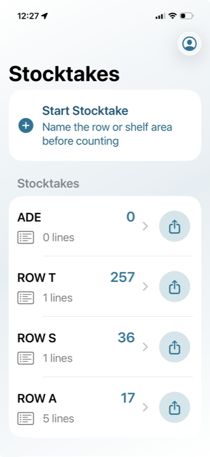
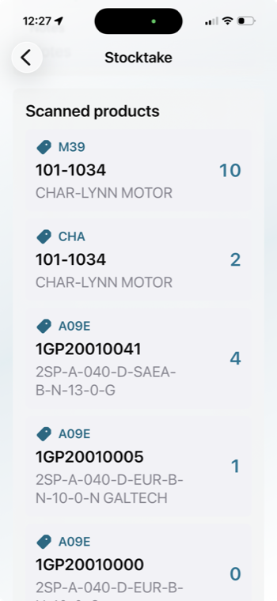
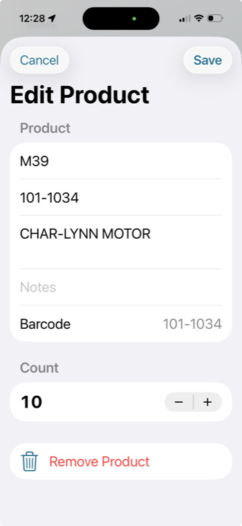

Step 1
Open the stocktake
Choose the row, shelf area, or stocktake you were working in.
Support
Stocktake Scanner helps capture bin locations, product labels, quantities, and notes during stock counts, then exports the results to Excel.
For help with Stocktake Scanner, contact Hyspecs support.
Go back to the saved row in the app and tap the product that needs updating. From there you can adjust the quantity and save the updated count.

Step 1
Choose the row, shelf area, or stocktake you were working in.

Step 2
Find the product that needs changing, then tap the row to open the edit screen.

Step 3
Update the quantity, bin location, notes, or product details, then tap Save.
Read the Stocktake Scanner Privacy Policy.